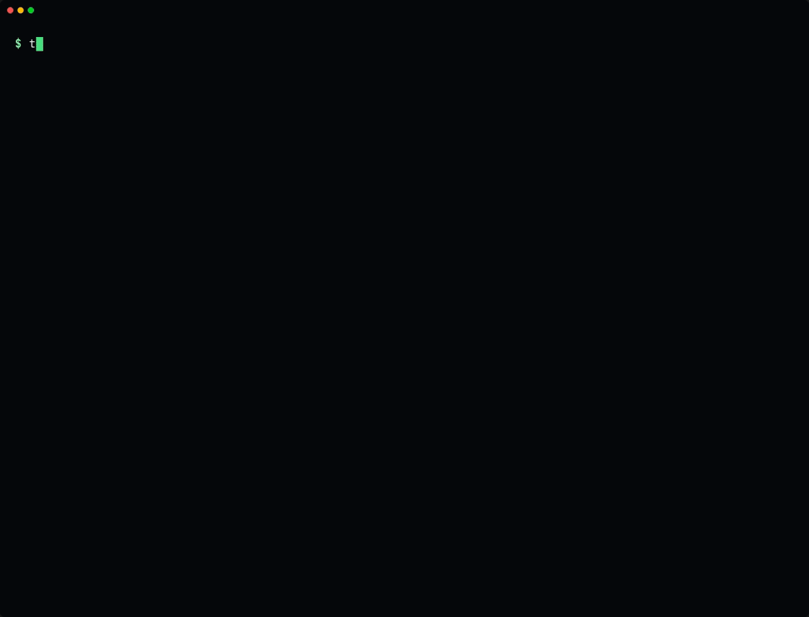

Inspection report · agent readiness of an OpenAI-compatible endpoint
“OpenAI‑compatible” is not a test result.
Your server answers chat. Agents need more: real tool_calls instead of <tool_call> text, an enforced tool_choice, streamed arguments that parse, JSON that fits the schema. toolsmoke runs 31 probes against your endpoint and issues a pass/warn/fail verdict, time-to-first-token, tokens/sec and an exit code.
$ uvx --from git+https://github.com/Blackman99/toolsmoke toolsmoke --demo broken
- Specimen
- llama.cpp b11490 (
llama-server --jinja) - Model
- Qwen2.5-0.5B-Instruct · 8 CPU cores
- Method
- toolsmoke
--anthropic· 31 probes · temperature 0 - Results
- awaiting print
- TTFT p50
- —
- Throughput
- —
- Verdict
- ________________
Sheet 2 of 5 · reviewer's notes
Finding 12: the tool call leaked out as plain text.
The most common failure is invisible from outside: the model emits a tool call, the server's parser misses it, and it ships as text with HTTP 200. Here is the real case from the sample run, annotated.
- 1 · Request. The probe asks a trivial question with
tool_choice: "none", as agents do on the turn where they want a plain answer. - 2 · Observed. The chat template emits a tool call anyway. The parser does not recognise it, so
<tool_call>markup lands incontent. - 3 · Impact.
tool_callsstays empty. Nothing is structured, so nothing runs: the user sees raw markup, or the agent loop retries until it gives up. - 4 · Verdict. Tool probes scan every reply for markup (
<tool_call>,[TOOL_CALLS],<function=,<|python_tag|>and more). toolsmoke fails the probe and says exactly what leaked.
REQUEST POST /v1/chat/completions messages: user "What's the weather in Paris right now?" tools: get_weather, get_time tool_choice: "none" RESPONSE 200 OK "content": "<tool_call> {{"name": "get_weather"…", "tool_calls": none RESULT tools.choice_none FAIL 491ms tool call leaked into content as text: '<tool_call> {{"name": "get_weather"…
References (the same failure in the wild): 1 tool calls leak as text, ollama#11621 2 streaming breaks tools, vllm#22403 3 templates drop tool results, llama.cpp#15012
Sheet 3 of 5 · test schedule
31 probes. One verdict.
Trivial prompts, temperature: 0, deterministic checks. A failure means the serving stack is broken, not that the model is dumb. Marks show the sample run; hover or focus a probe for its observation.
- 3.1Basics
models list, system prompt, multi-turn memory, stop sequences,
max_tokens+finish_reason - 3.2Streaming
SSE deltas,
[DONE],finish_reason,stream_options.include_usage - 3.3Tool calling
single, schema-valid args, parallel with distinct ids,
tool_choicenone / required / named, markup leaks, tool-result round trips, streamed deltas - 3.4Structured output
json_objectmode and strictjson_schema, validated - 3.5Reasoning
thinking arrives in
reasoning_content, not as<think>in the answer - 3.6Errors
unknown model, malformed request, bad key → clean 4xx, not 500 or a silent 200
- 3.7Anthropic Messages
/v1/messages, event stream sequence,tool_use,tool_result(opt-in with--anthropic) - 3.8Performance
median time-to-first-token and decode tokens/sec, with optional hard gates
Sheet 4 of 5 · exhibit A
Try it without a model.
toolsmoke --demo broken starts a built-in mock server with the common failure modes switched on. --demo good shows what a clean pass looks like. No GPU, no API key.
$ toolsmoke --demo broken$ toolsmoke --demo good
--demo broken, then --demo good (terminal recording)Sheet 5 of 5 · procedure
Install in seconds, run on any endpoint.
uvx --from git+https://github.com/Blackman99/toolsmoke toolsmoke \
--base-url http://localhost:8080/v1 --model qwen3pipx install git+https://github.com/Blackman99/toolsmoke
OPENAI_API_KEY=sk-... toolsmoke --base-url https://api.example.com/v1 --model my-model --anthropic- uses: Blackman99/toolsmoke@v0.1.1
with:
base-url: https://llm.example.com/v1
model: qwen3-coder
api-key: ${{ secrets.LLM_API_KEY }}
max-ttft: "1500"- Exit codes
- 0 nothing failed · 1 failures (or warnings with
--strict) · 2 endpoint unreachable - Output
- table · JSON · Markdown (for job summaries and PR comments)
- Requires
- Python 3.9+, standard library only, zero dependencies
- Servers
- vLLM · llama.cpp · Ollama · LM Studio · SGLang · LiteLLM · OpenRouter · any
/v1/chat/completionsor/v1/messages